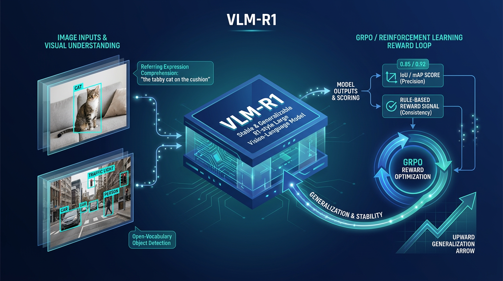
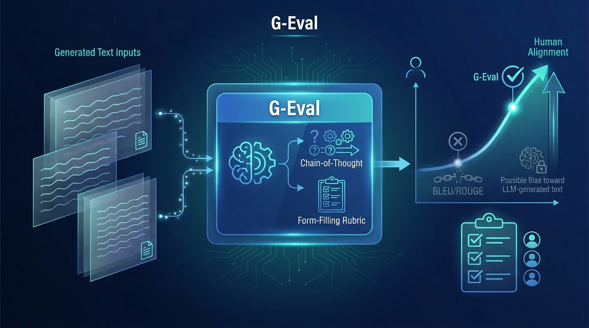
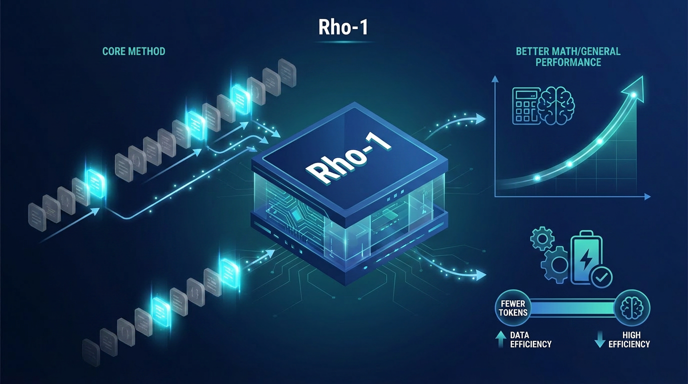
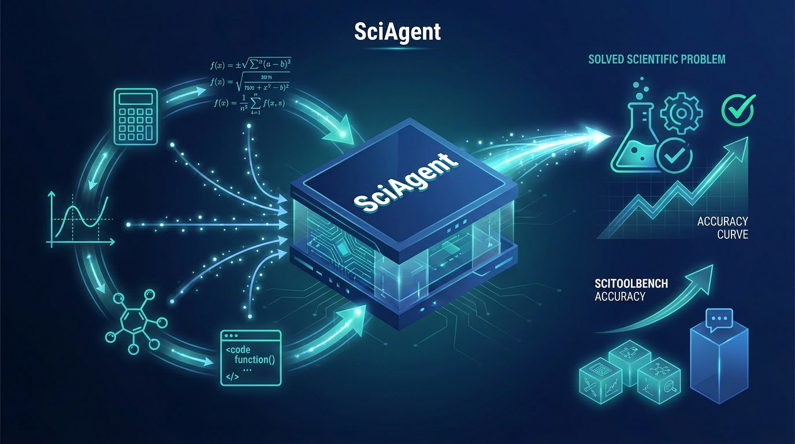
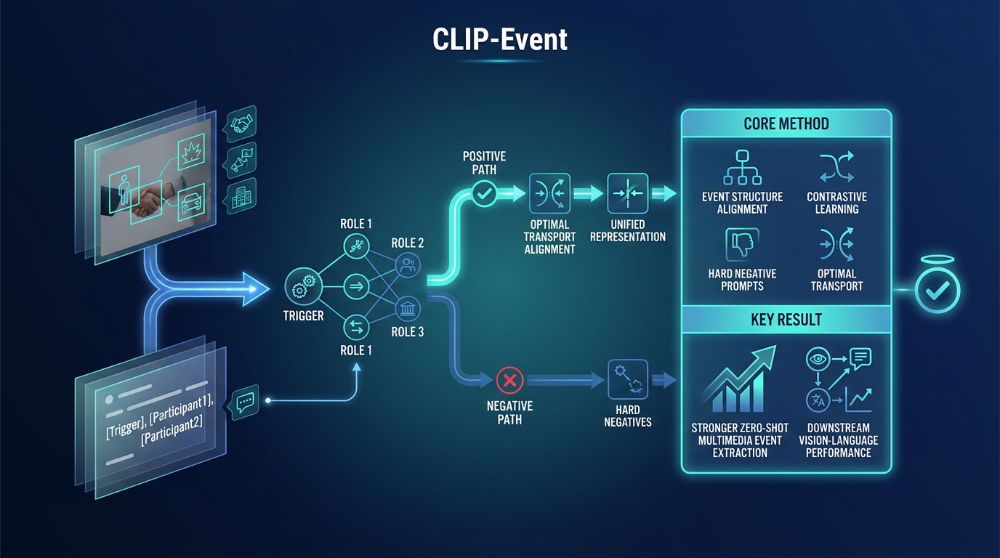
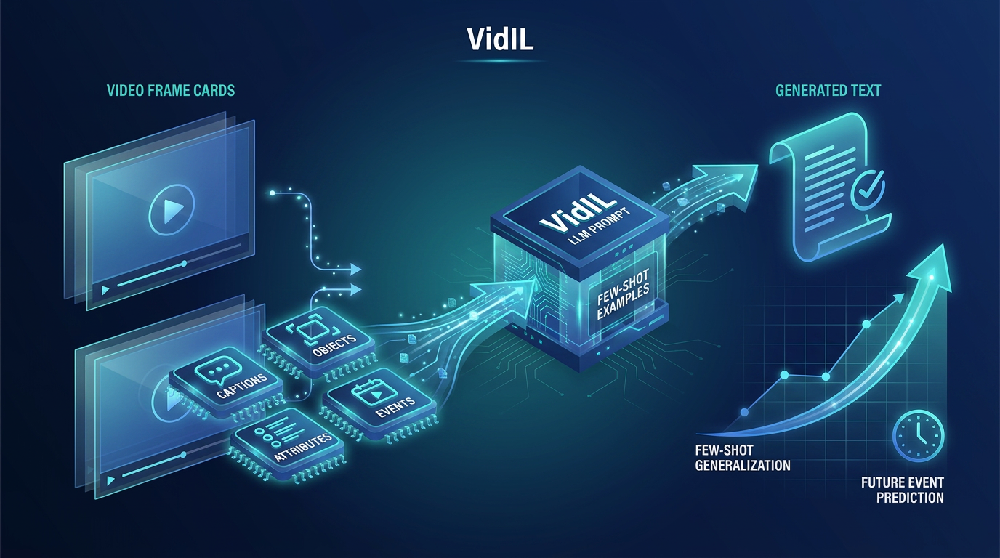
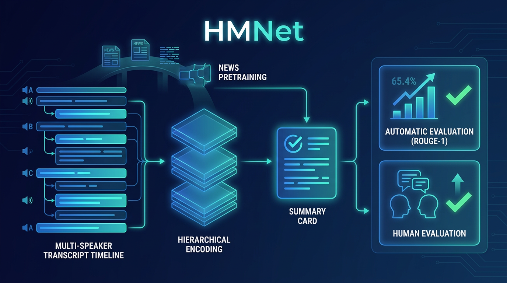
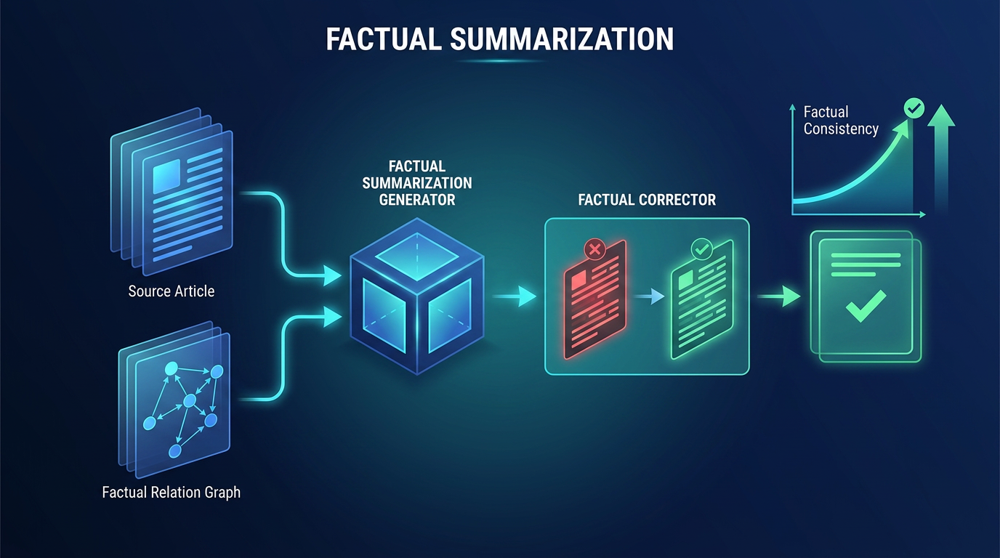
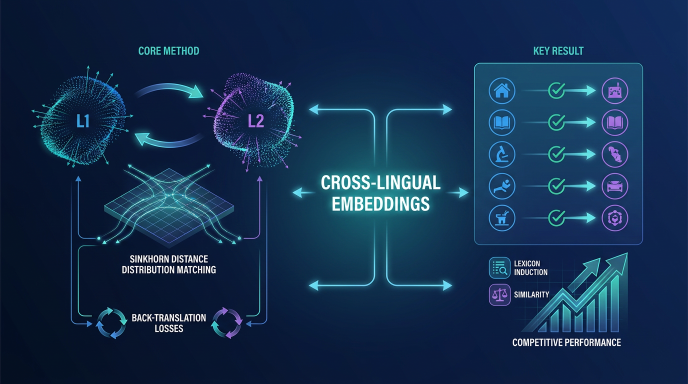
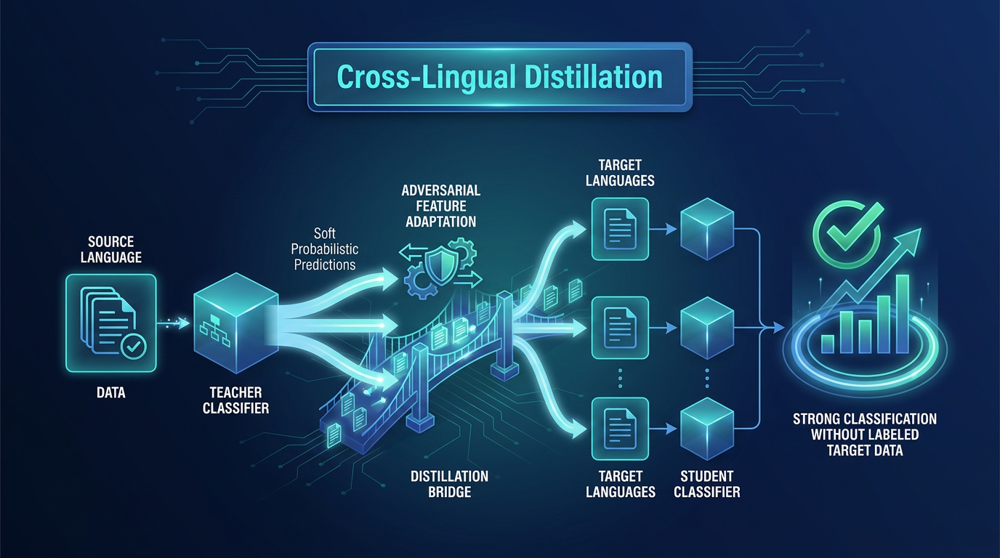

About
I am an AI researcher working on embodied AI, vision-language models, large language models, and agent systems. My research focuses on building AI systems that connect perception, language, reasoning, and action, with recent interests in robotics foundation models, multimodal reasoning, and tool-augmented agents.
Robotics foundation models
Multimodal reasoning
Tool-augmented agents
LLM evaluation
I am currently an embodied AI researcher at Galbot. Previously, I was a Principal Scientist at Om AI and a Senior Researcher at Microsoft AI.
I received my Ph.D. and M.S. from the Language Technologies Institute at Carnegie Mellon University, advised by Professor Yiming Yang, and my B.S. from the Department of Electronic Engineering at Tsinghua University.
Selected Publications
Representative work across vision-language reasoning, LLM evaluation and pretraining, agents, summarization, and cross-lingual learning.






A Hierarchical Network for Abstractive Meeting Summarization with Cross-Domain Pretraining
Findings of EMNLP 2020


